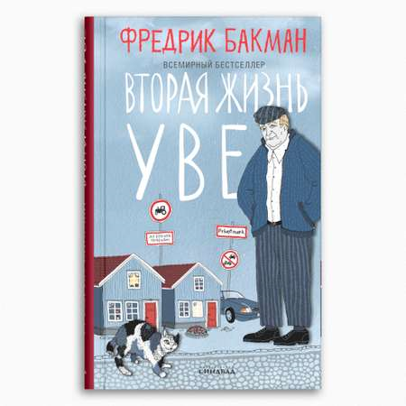

Мой топ книг


В 2019 году я закончила педиатрический факультет Белорусского государственного медицинского университета. 3 года отработала врачом-педиатром в УЗ"Минская центральная районная клиническая больница". На данный момент нахожусь в декретном отпуске. Своё свободное время люблю проводить за чтением книг, прогулками на свежем воздухе и освоением новых знаний в codegirl school.
Я уже давно задумывалась о смене профессии, правда о сфере IT не думала всерьёз, так как считала это чем-то сложным для меня. Но попав на урок в codegirl school, я совсем по-другому взглянула на сферу IT, а на фронтенд разработку в частности. Фронтенд разработка приглянулась мне тем,что ты можешь видеть свой результат работы сразу же. Ведь уже на первых уроках в codegirl school я создала свою первую веб-страницу!